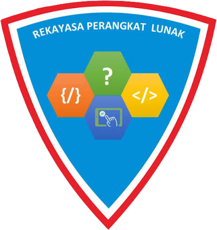

01

RPL
Rekayasa Perangkat Lunak
Fokus
Pengembangan perangkat lunak, website, aplikasi, dan sistem berbasis teknologi.
Visi
Menjadi program keahlian yang menghasilkan tenaga profesional di bidang perangkat lunak.
MisiMembekali siswa dengan kemampuan pemrograman, pengembangan aplikasi, dan pemecahan masalah.